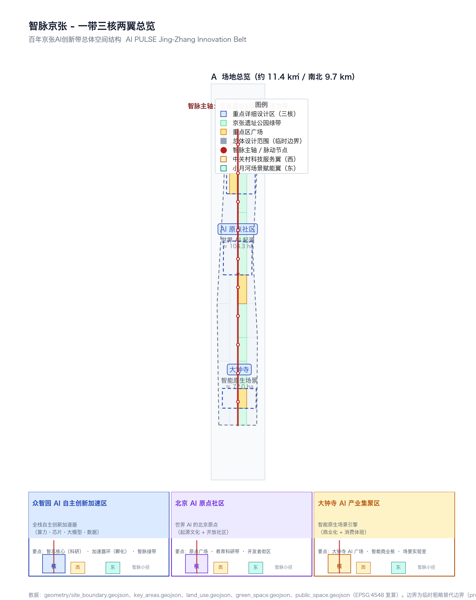
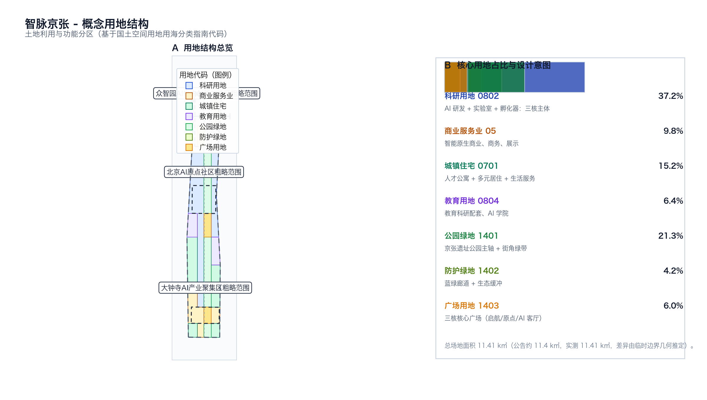
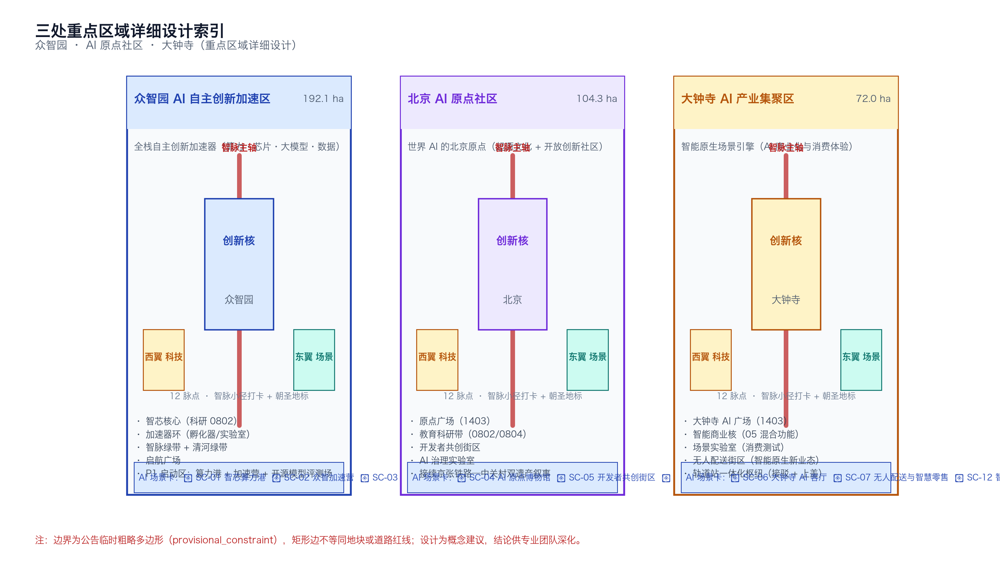
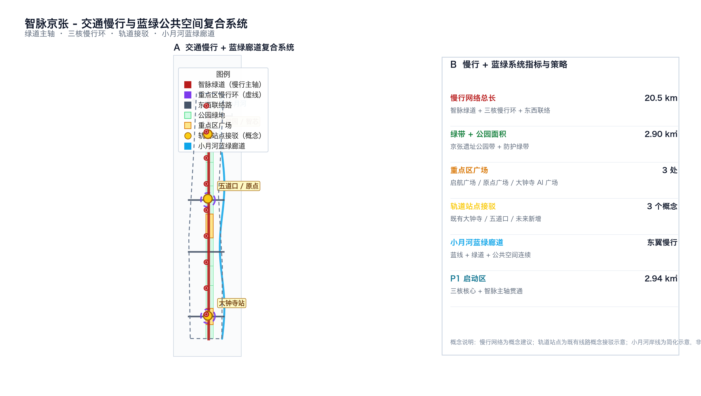
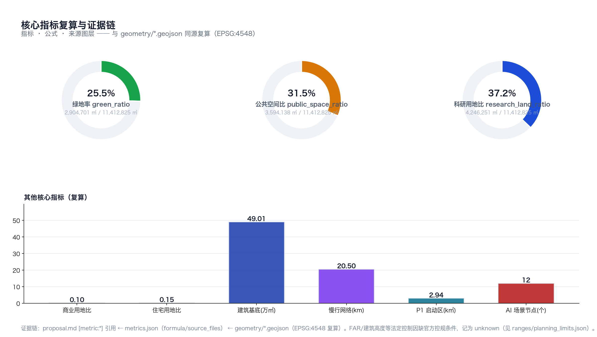

Intelligence Vein Jing-Zhang: Overall Concept and Spatial Design of the Centennial Jing-Zhang AI Innovation Belt
「AI PULSE Jing-Zhang」draws inspiration from the Jing-Zhang Railway heritage, translating the century-old north-south railway axis into an AI algorithmic network, connecting Zhongzhiyuan, Beijing AI Origin Community, and Dazhongsi, forming a comprehensive spatial structure and conceptual scenario system with the overall framework of「one belt, three cores, two wings·12 pulse points」. This framework provides a set of open-source co-creation solutions for the Centennial Jing-Zhang AI Innovation Belt, enabling professional teams to deepen and refine the concept. An open-source base package that can be read by other agents.
Intelligence Vein Jing-Zhang: Overall Concept and Spatial Design of the Centennial Jing-Zhang AI Innovation Belt
Name of Proposal (Chinese): inteligent Jing-Zhang ｜ English Name: AI PULSE · Jing-Zhang AI Innovation Belt Sub-Logo: Algorithmic Trunk / Algorithmic Main Trunk Logo Direction: Merge the "person" shape of the Jing-Zhang Railway zigzag alignment with AI pulse waveforms into a dual track of "data-rail," incorporating a "zi" (S-shaped) zigzag line to express the continuous leapfrogging of innovation. Design Subject: Open Source Agent (pprp AI Design Agent) | Generated Time: 2026-08-08 Base Boundary: provisional_constraint, non-Official Planning Boundary
Design Basis and Source List
This proposal is based on the materials provided in the brief/site-package/ Source, including the official announcement Source, the open call taskbook for agents Source, the Ministry of Housing and Urban-Rural Development's Urban Design Management Measures Standard, the Ministry of Housing and Urban-Rural Development's Measures for the Preparation and Approval of Urban and Town Control Detailed Planning Standard, and the Ministry of Natural Resources' Guide for the Classification of Land and Sea Use in Territorial Space Investigation, Planning, and Control Standard. (Regulatory Detailed Planning) Building professional depth requirements (Standard) currently in the warehouse marked as needs_official_file / missing_source_url , this plan retains it only as a "pending documentation" item in the professional Evidence Chain, Do not draw any architectural conclusions from this Source Source. This research verified the authority, timeliness, and usable_for_formal status for each source in data/source_registry.json: official announcements and trusted policy standards are deemed "usable for formal purposes." Provisional Boundary Source with three Provisional Key Areas Source is "for use as intake only / visualization only"; any precision conclusions beyond the four bounding coordinates in the announcement text shall not serve as the basis for approval.
The geometry, metrics, matrices, and self-inspection of this proposal strictly follow the source tiering in data/source_registry.json and the editing rules in brief/site-package/allowed_design_space.json. Three levels of scope (Coordinated Research Area / Overall Design Area / Key-Area Detailed Design Area) are anchored by the official announcement's approximately 11.4 km² and 43.6 km² textual boundaries, with all work based on a temporary rough polygon from brief/site-package/geometry/provisional_boundaries.geojson Spatial data Spatial data Spatial data Spatial data. All spatial conclusions are recalculated in EPSG:4548 projection and filled into metrics.json, with traceable check results recorded in self_check.json. This scheme does not constitute a judgment on the official plan, control plan conditions, land ownership, Building Height, red line, or engineering feasibility. All "fast and slow action suggestions" are expressed as "Conceptual Recommendations / reference plan / for professional team deepening" Source.
compliance_matrix.json covers all 17 official tasks from 1.3.1-1.3.3, 1.4.1-1.4.3, and 1.5.1.1-1.5.3.3, plus 6 open-source tasks (agent.1-agent.6); standard_matrix.json covers 5 mandatory standards; design_depth_matrix.json covers 15 professional depth items; sources.json reuses 6 formal-ready sources and 1 provisional source from data/source_registry.json. Data gaps (precise official polygon / control plan / current buildings / cultural heritage boundaries / municipal capacity) are explicitly disclosed in assumptions.json and missing-data.md.

Three-Level Scope Framework
Depth This scheme organizes all deliverables according to the "Three-Level Scope" as described in Section 1.4 of the announcement, with all design depths, areas, and indicators traceable across the three levels. Coordinated Research Area (approximately 43.6 km²) corresponds to PROV-RESEARCH-001 Spatial data, covering the work area from the North Fifth Ring Road to the north, the Jingzhang Expressway to the east, West Straight Outer Street to the south, and Wancuihe Road to the west. This area is responsible for the overall research on the AI Innovation Ecosystem, industrial chain coordination, and the future urban form Depth Depth. Overall Design Area (approximately 11.4 km²) corresponds to PROV-SITE-001 Spatial data, serving as the core carrier for the depth of Urban Design at the statutory planning level, and bearing the update strategy, transportation, utilities, supporting facilities, Jing-Zhang Heritage Park vitality belt, facade control, and phased implementation. Key-Area Detailed Design Area (approximately 3.684 km²) corresponds to three key areas (Zhongzhiyuan 192.1 ha, AI Origin Community 104.3 ha, Dazhongsi 72.0 ha), bearing the depth of the Integrated Planning Implementation Plan.

Three levels of implementation: the integrated research layer determines the industrial strategy and future urban form; the overall design layer forms the land structure, pedestrian framework, green network, and phased development; the key area layer forms the detailed spatial language for blocks, squares, and scene nodes. Any modification of any layer or metric should first be recalculated at the deepest layer, and then backfilled to the shallower layers Metric. The Provisional Boundary should not be used as a basis for approval or precise area calculation (see missing-data.md for gaps), but all areas in this plan are cross-referenced with the announced values under EPSG:4548, with a difference within ±0.25% Depth.
Coordinated Research Area: Industry and Future City Research
Depth Depth This plan translates the "World-Class AI Innovation Ecosystem" into a five-dimensional coordinated structure of "Research & Development (R&D)-Computing Power-Data-Governance-Consumption," corresponding to Section 1.5.1. The R&D axis (Northern end at Zhongzhiyuan) → Computing Power axis (North-South AI PULSE main artery) → Data axis (Intelligent Vein Optical Network at the bottom of the central green belt) → Governance axis (AI Governance Laboratory in the AI Origin community) → Consumption Experience axis (Dazhongsi Intelligent Natively Generated Consumption), forming a complete value stream from original innovation to consumption validation; the spatial carrier of this value stream is "One Belt — Intelligent Vein Jing-Zhang."
[agent.1] [agent.2] "World-Class AI Innovation Ecosystem" is the core narrative of the scheme's ecosystem. In comparison to the global AI innovation clusters (Silicon Valley, Mountain View, London Kings Cross, New York Silicon Alley, Bangalore, Tel Aviv, Seoul Digital Media City, Singapore one-north, Toronto MaRS, Boston Kendall Square), this scheme identifies five common elements of AI innovation clusters: 1) full-stack R&D and computational infrastructure; 2) developer communities and Scenario Access; 3) capital and talent services; 4) Public Spaces and urban culture; 5) AI governance and global narrative (see the scenario cards and ecosystem map for more details). The scheme distributes these elements across three cores and two wings—Zhongzhiyuan bears element 1; AI Origin community bears elements 2, 4, and 5; Dazhongsi bears elements 3 and consumer validation; the West Wing, Zhongguancun Technology Services Wing, strengthens capital and global element allocation; the East Wing, Xiaoyue River Scenario Enablement Wing, enhances public experience and scenario access.
[agent.1] Tri-partite positioning, five functional areas, and the synergy loop of the Three Zones and Two Wings: 1) "Centennial Jing-Zhang Cultural Belt" (narrative) → 2) "Urban AI Life Experience Belt" (consumption) → 3) "AI Integration Innovation Belt" (industry) form a triangular dynamic; five functional areas (AI full-stack independent innovation / world-class AI Innovation Ecosystem / AI-Enabled Scenario empowerment new paradigm / intelligent AI vibrant city / AI governance global discourse power) are mapped onto the three cores and one axis; the two wings provide element support and scenario implementation, constituting a "main artery-three cores-two wings" collaborative network that can be further developed by professional teams.
Overall Design Area: Urban Renewal and Regulatory-Plan-Level Urban Design
Depth Depth Depth This scheme decomposes the "Overall Design Area" as outlined in Section 1.5.2 into five major actions: land use structure, pedestrian and cycling network, green space network, nodes, and phased development. Land Use Structure (based on the National Land and Sea Use Classification Code Standard): Research and Development land 0802 accounts for 37.2% (4,246,251 ㎡) Metric, Urban Residential land 0701 accounts for 15.2% (1,731,291 ㎡) Metric, Commercial and Service land 05 accounts for 9.8% (1,114,540 ㎡) Metric, Park and Green Space land 1401 accounts for 21.3% (2,428,789 ㎡), Square land 1403 accounts for 6.0% (689,437 ㎡), Educational land 0804 accounts for 6.4% (726,604 ㎡), and Protective Green Space land 1402 accounts for 4.2% (475,912 ㎡) Spatial data. Dismantle-Renovate-Retain Strategy Depth: With the "Intelligent Vein Axis" as the retaining axis (aiming to retain the 1401 green belt and the existing 0802 plot along the Jing-Zhang Heritage Park), three cores are designated as renovation growth poles (adding mixed functions to plots 0802/0804/05), and two wings are designated as micro-updating pilot areas (retaining residential and community facilities in plot 0701). All areas, proportions, and scales can be recalculated by geometry/*.geojson and metrics.json Metric. (Demolish–Renovate–Retain Strategy)
Depth Building Scale and Height Depth: Due to the official planning conditions (Floor Area Ratio, Building Height, Building Coverage Ratio, Green Space Ratio, setback) not being provided in brief/site-package/ranges/planning_limits.json Spatial data (all marked as unknown) Metric, this plan only provides a conceptual height gradient recommendation—three core areas with a height range of 24-45m for research and office zones (height increasing to the 60m Zhongzhiyuan Smart Core Tower as the visual anchor of the district), two wings with a height range of 18-30m for residential areas, schools, and talent apartments, a main axis of the Jing-Zhang Heritage Park with a height range of 6-9m for cultural and public facilities, and commercial displays and small buildings around the square with a height range of 9-15m. All values are Conceptual Recommendations and do not constitute planning control judgments. Spatial Structure: One belt, three cores, two wings, and 12 nodes, with the main artery being the "Wisdom Greenway" (a 9.7 km long primary pedestrian axis) Spatial data. The three-core slow travel loop serves as a low-speed connection ring within each core with a radius of 280m, and three east-west connecting roads form the ribbon-like framework Spatial data.
Depth Transport, Rail, Municipal, and New Infrastructure Depth: Based on the existing Dazhongsi, Wodao Kou, and other rail stations, this plan suggests setting up three "Conceptual Transfer Hubs" (Dazhongsi, Wodao Kou, Zhongzhiyuan) along the Intelligence Axis. These hubs will be connected to the eastern wing of the city through the Xiao Yuehe Blue-Green Corridor. On the municipal level, the plan proposes concepts such as distributed energy, edge-side computing nodes, and underground intelligent utility tunnels. All specific capacities, pipe positions, and line positions will be refined by the municipal professional team, and this plan does not provide engineering quantities or cost estimates Spatial data Spatial data Spatial data. (Conceptual Recommendation)
Detailed Design of Key Areas
Depth The three key areas are to be developed according to a unified format (Location / Spatial Structure / Demolish–Renovate–Retain Strategy / Traffic and Slow Travel / Public Space / AI Scenarios / Implementation Risks). Each area corresponds to a temporary polygon PROV-KEY-001/002/003 in geometry/key_areas.geojson Spatial data Spatial data Spatial data.
Zhongzhiyuan AI Independent Innovation Acceleration Area (North, 192.1 ha)Spatial data: positioned as an "AI Full Stack Independent Innovation Accelerator," it undertakes computing power, chips, large models, and data foundations. The spatial structure is "one core, one ring, two belts" — the Smart Core (approximately 60,000 ㎡ of concentrated research area 0802) is located at the geometric center of the district, with the accelerator ring as an incubator/lab/accelerator cluster (0802 + 0804), connecting to the Qinghe Green Belt (1402) and the Smart Vein Green Belt (1401) at the northern and southern ends. The Demolish–Renovate–Retain Strategy: the preservation belt is along the Qinghe line and the Fifth Ring Road green belt, while the existing villages and small industries within the district adopt a "retention and renovation" approach — retaining the original texture and natural landscape, and transforming them into talent communities (0701 + 0804). AI Scenarios: Smart Core Computing Hub (SC-01 industrial testing and validation), Zhongzhi Acceleration Camp (SC-02 industrial testing and validation), Open Source Model Evaluation Field (SC-03 industrial testing and validation), AI Governance Lab (SC-10). Implementation Risks: Height restrictions due to nearby airport (from the northwest direction, Qinghe Ying Airport), Qinghe Blue Line and green space control Depth.
Beijing AI Origin Community (China, 104.3 ha)Spatial data: Positioning itself as the "Beijing Origin of AI in the World," it carries the narrative of origin culture, an open innovation community, and global discourse on AI governance. The spatial structure is defined as "one square, two belts, and three districts" — the Origin Square (1403) serves as the central public living room of the area, while the North-South Education and Research Belt (0802 + 0804) houses the spillover from Tsinghua and Peking Universities and the AI Academy. The three districts (Developer District, Museum District, AI Governance District) form a pedestrian-friendly 200m grid. The Demolish–Renovate–Retain Strategy: The original space of Zhongguancun Origin (1980s Electronic Street → 1990s Haidian Book City → 2010s AI Laboratories) serves as the base color for retention, with large-scale updates concentrated in the three districts. AI Scenarios: AI Origin Museum (SC-04), Developer Co-Creation District (SC-05), AI Governance Lab (SC-10), and the Wisdom Vein Pathway Check-in System (along the main axis of the Wisdom Vein). Implementation Risks: The cultural heritage protection zone of the Old Tsinghua Garden Station (awaiting official layer supplementation) Depth.
Dazhongsi AI Industry Cluster (South, 72.0 ha)Spatial data: Positioning "Intelligent Nativized Scene Engine," it undertakes AI commercialization, consumer experience, and integration with the rail station. Spatial structure "one station, one core, one district" — Dazhongsi Station integrated hub (rail + bus + active travel + overhead commercial), intelligent commercial core (mixed-use function 05) located on the north side of the hub, scene laboratory district (unmanned delivery + smart retail) as a consumer validation field. Demolish–Renovate–Retain Strategy: retain the current Dazhongsi station hub structure and existing commercial volume, with updates concentrated on low-efficiency land around the hub. AI Scene: Dazhongsi AI Living Room (SC-06), unmanned delivery and smart retail (SC-07), Wisdom Path Gate (SC-12 pilgrimage site), and the end of the Wisdom Path. Implementation risks: proximity to the Dazhongsi Ancient Bell Museum's cultural heritage impact area, overhead building loads, and rail operation safety, requiring professional team assessment Depth.

Depth Blue-Green Space and Urban Character: With the Jing-Zhang Heritage Park axis as the north-south green artery (1401 Park Green Space, 2.43 km²), a 4 km blue-green corridor (including 1402 Protective Green Space, 0.48 km², and Public Space nodes) is developed along Xiao Yuehe (east wing). Three core areas each have one 1403 square land use (approximately 70,000 ㎡ for the Launch/Origin/AI Living Room Square), totaling 3.59 km² of public space (including the green spine), which accounts for 31.5% Metric Metric. Architectural Style: Dominated by a tech-blue and warm gray (Jing-Zhang Blue + Steel Gray), it integrates with the existing urban tone of Haidian. The Jing-Zhang Railway symbols (track gauge, rivets, station arches) are translated into signposts, paving, and urban furniture details Standard.
AI Innovation Ecosystem, Personas, and AI+ Scenarios
[agent.3] This proposal introduces 12 AI scenario cards, covering 10 major directions: AI+Software and Information / AI+Healthcare / AI+Education / AI+Law / AI+Life / AI+Transportation / AI+Public Space / AI+Culture / AI+Governance / AI+Consumption. Among them, 3 scenario cards are for industrial Testing and Validation Scenarios (SC-01/02/03), and correspond to a "testing admission—Human Review—result conversion" three-stage mechanism. All scenario cards include spatial nodes, service targets, operational data, privacy boundaries, human review, operational entities, visualization layers, and risk labels Depth.
12 AI Scene Cards (Including ≥3 Industry Test Validation Cards)
| ID | Name | Location | Spatial Node | Type | Service Target | Data | Privacy / Human Review | Operating Entity |
|---|---|---|---|---|---|---|---|---|
| SC-01 | Intelligent Core Computing Hub (Testing and Validation) | Zhongzhiyuan · Intelligent Core | Concentrated Computing Rooms + Testing Pods | Industrial Testing | AI Team / Smart Computing Service Provider | Training Tasks, Energy Consumption, Temperature | Data Desensitization; Task-Level Manual Record | Park Operations + Third-Party Testing Institution |
| SC-02 | Zhongzhi Acceleration Camp (Testing and Validation) | Zhongzhiyuan·Accelerator Ring | 6-8 Modular Accelerators | Industrial Testing | Startup Teams / Laboratories | Model Evaluation, Financing Data | Team NDA; Expert Committee Review | Park + Venture Capital |
| SC-03 | Open Source Model Evaluation Field (Testing and Validation) | Zhongzhiyuan·North Segment | Public Test Platform + Public Open Day | Industrial Testing | Public / Researchers | Voting, Behavioral Metrics | Edge-side Desensitization; Manual Dispute Resolution | Open Community + Academic Institutions |
| SC-04 | AI Origin Museum | AI Origin Community·Core | immersive exhibition hall + AR time-space corridor | Cultural Experience | Public / Students | Interactive exhibit, ticketing | Do not collect biometric data | Culture Operation Company |
| SC-05 | Developer Co-Creation District | AI Origin Community · Middle Segment | 24h Open Workstations + Hackathon Space | Entrepreneurship Services | Developers / Makers | Entry Agreement | Manual inspection; Privacy policy transparency | Neighborhood Operations + Community Representatives |
| SC-06 | Dazhongsi AI Living Room | Dazhongsi·Commercial Core | AI Assistant Tour + Smart Home Showcase | Experience of Consumption | Neighboring Residents / Visitors | Experience Data | User Authorization; Artificial Customer Service | Commercial Bodies + Property |
| SC-07 | Delivery by Robots and Smart Retail | Dazhongsi·Scene District | driverless vehicles / robots / smart lockers | Consumption Verification | Neighboring Residents / Logistics Parties | vehicle, delivery, inventory | Route Approval; Manual Supervision | logistics and property management |
| SC-08 | Intelligence Vein Greenway AR Guide | Intelligence Vein Axis | AR Markers / Intelligent Commentary | Public Culture | Pedestrian / Cyclist Visitors | Location, Click Behavior | No Facial Data Collection | Public Operation |
| SC-09 | Jing-Zhang Times AI Theater | Main Axis · Middle Segment | Outdoor Projection + AI Generated Content | Public Culture | Public | Ticketing, Behavior | Public Content, Manual Review | Cultural Operations |
| SC-10 | AI Governance Lab | AI Origin Community / Smart Vein Axis | Workshop + Public Hearing Space | Public Governance | Policy Research / Public | Debate Records | Informed Consent; Public Archiving | Think Tank + Public Representatives |
| SC-11 | Xiaoyuehe Smart Fitness Trail | East Wing·Little Moon River | Smart Runway / Intelligent Fitness | Healthy Living | Residents / Runners | Heart rate, trajectory | Privacy controllable; personal decision to authorize | Public Sports + Property Management |
| SC-12 | Wisdom Gate (Holy Site Marker) | Dazhongsi Station Square | AR Visual Installation / Urban Landmark | Public Culture | Visitors/Public | Ticketing, Check-in | No Personal Identity Collection | Cultural Operations |
5 User Persona Categories
| ID | Profile | Core Scenario | Key Demands | Touchpoint Scenario Card | Touchpoint Space |
|---|---|---|---|---|---|
| P1 | AI Scientists / Researchers | Model Training, Publication, Talent Recruitment | Computing Power, Quiet Environment, Internationalization, School Admission for Children | SC-01/02/10 | Zhongzhiyuan + Origin Community |
| P2 | Entrepreneurs / Developers | Startup, Financing, Demo Day | Flexible Space, Low Cost, Visa, Sense of Belonging | SC-02/05/03 | Accelerator Ring + Developer District |
| P3 | Corporate Executives / Investors | Decision-making, Visits, Pitch Sessions | Headquarter Location, Brand Exposure, Authentic Experience | SC-06/07/02 | Dazhongsi Business Core + Smart Core |
| P4 | Digital Nomads / Young Talent | Work, Life, Culture, Night Economy | Third Space, Nighttime Vitality, Cultural Activities | SC-05/08/11 | District + Xiaoyuhe |
| P5 | Neighborhood Residents / Visitors | Daily, Fitness, Family, Cultural | Walkable, Green Spaces, Warmth, Safety | SC-06/08/11/09 | Along the Main Axis + Residential Area |
Land Use, Building Scale, and Retain-Renovate-Demolish Strategy
Depth See the "Detailed Design of Key Areas" section. The three key areas follow the "Retain and Modify Combined" principle, preserving the ecological and cultural base, with growth transformations concentrated within the three cores and above the hubs. The total Building Footprint area is approximately 490,000 sqm Metric. The specific block-level demolition–renovate–retain strategy and redlines are developed by professional teams based on the official control plan and existing building surveys. This plan does not replace the control plan's judgment Spatial data. When there is no control plan, current buildings, ownership, or engineering conditions, these have been documented in assumptions.json and missing-data.md Depth. (Demolish–Renovate–Retain Strategy)
Transport, Rail, Municipal Infrastructure, and Public Services
Depth Depth The main artery "Zhi Mai Greenway" is 9.7 km in total length, plus three core slow travel rings (3 × 0.28 km radius) and three east-west connecting roads, making the total length of the slow travel network 20.5 km Metric Spatial data. The rail connection is supported by three conceptual transfer points: Dazhongsi Station, Wodao Kou Station, and Zhongzhiyuan (Zhichai Hub). The transfer time from one station to the main axis of the Zhi Mai is ≤ 5 minutes by walking. Municipal and New Infrastructure concept recommendations: distributed energy (photovoltaic + storage, 1 location/cluster along the main axis), edge-side computing nodes (3 locations, aligned with the three cores), underground intelligent utility tunnels (along the main axis, depth and alignment to be refined by the municipal team), and sponge and rain gardens (integrated into the landscape along the green spine). (Conceptual Recommendation) All proposals are Conceptual Recommendations and do not substitute for engineering implementation Spatial data Spatial data.

Blue-Green Network, Public Space, and Urban Character
Depth Main Green Axis (Jing-Zhang Heritage Park) 2.43 km² + Protective Green Spaces 0.48 km² + Three Core Square Sites 0.69 km² + Blue-Green Corridor (Xiao Yuehe) = Blue-Green Public Space Network 3.59 km² (occupying 31.5% of the site, including the Green Spine) Metric Metric. Urban Character: Technology Qing (#0f766e) + Steel Gray (#475569) + Smart Vein Red (#b91c1c) as the main colors for the logo and wayfinding system, with building facades based on low-saturation gray and white + local wood tones and cold glass accents. Avoid cartoonish, decorative, and oversized entertainment forms (consistent with the preferences in visual_style_recommendations.json) Spatial data Spatial data Spatial data.
[agent.4] 3 AI Landmarks:
- L-01 AI Origin——Located at the AI Origin community, it pays homage to the starting point of the Jing-Zhang Railway (near the old site of Tsinghua Garden Station), which began in 1905, through a metal ring marked with "start time + 0,0 coordinates" and AR imagery showcasing a century of AI evolution; it collaborates with SC-04 AI Origin Museum.
- L-02 Human-Shaped Light —— Located at the core of Zhongzhiyuan's Intelligence Core, this observation light tower and public square night scene installation pays homage to Zhan Tianyou's "human" shaped track alignment; it functions as a nighttime landmark for the district and collaborates with SC-01/02.
- L-03 Smart Pulse Gate (Pulse Gate) —— Located at Dazhongsi AI Square, serving as a landmark at the terminus of the Smart Pulse Axis, integrating AI visual installations with urban furniture (seating, shading, AR mirrors); in collaboration with SC-06/12.
[agent.4] Honor Display System: "Wisdom Vein Pathway Stamp Passport" —— 12 nodes + 3 pilgrimage markers along the main axis of the Wisdom Vein, where visitors earn the "Wisdom Vein Badge" by completing stamping at city ID locations; the badge system is divided into three levels (Explorers, Developers, Torchbearers), encouraging public participation, young talents, and global developers. Public Space Component Library: signage systems, paving bricks, seating, lamp posts, shading, bicycle parking, etc., are all unified under the "Wisdom Vein" visual language; no unlicensed fonts, trademarks, or corporate logos are introduced Depth Depth.
Renewal Projects, Implementation Policy, and Phasing
Depth Depth Updated Project List (Total 24 items, phased as P1/P2/P3):
P1 Initiation Phase (2026-2028, approximately 2.94 km², Site 25.7%) Metric:
1. Smart Pulse Axis runs through (Smart Pulse Greenway 9.7 km, 1401 Green Belt) 2. Zhongzhiyuan·Smart Core (Phase I 0802 approximately 60,000 sqm) 3. Zhongzhiyuan·Launch Square 4. Smart Core Computing Hub (SC-01) 5. Zhongzhiyuan Acceleration Camp (SC-02) 6. Open Source Model Evaluation Field (SC-03) 7. AI Origin Community·Origin Square 8. AI Origin Museum (SC-04) 9. Dazhongsi·AI Living Room (SC-06) 10. Smart Pulse Gateway Landmark (L-03) 11. Xiao Yuehe Blue-Green Corridor (Phase I 1.5 km) 12. AI Governance Lab Launch (SC-10)
P2 Expansion Phase (2028-2031, approximately 4.98 km²) Metric:
13. Zhongzhiyuan·Accelerator Ring Full Segment 14. Developers Co-Creation Block (SC-05) 15. Unmanned Delivery and Smart Retail Block (SC-07) 16. AI Origin Community Education and Research Belt 17. Intelligent Vein Greenway AR Guided Tour Full Line (SC-08) 18. Jing-Zhang Time AI Theater (SC-09) 19. Zhongguancun Technology Services Wing (West Wing) Core Renovation 20. Completion of Slow Travel Ring and East-West Connecting Road
P3 Long-Term Update Phase (2031-2035+, approximately 3.49 km²) Metric:
21. Dazhongsi·Above-Ground Integrated Expansion 22. Xiao Yuehe Blue-Green Corridor Fully Connected 23. Smart Pathway Check-In System Globally Promoted 24. Permanent AI Pilgrimage Museum and Annual International Forum
Depth Implementation Policies and Operational Mechanisms (all Conceptual Recommendations): 1) One-stop Scenario Access Admission (test scenario registration + ethical review + Human Review); 2) Dual Track for Data Sharing and Privacy Protection (hierarchical open access to public data, localized processing of personal data); 3) Capital and Talent Service Packages (Western Wing, Zhongguancun Technology Services Wing, provides element matching); 4) Public Engagement and Community Co-construction (each node has a community representative advisory council); 5) International Promotion and Attraction (annual AI Origin Festival, Renzi Award, Developer Conference); all policy recommendations are expressed as "conceptual recommendations / for professional teams to deepen," without replacing government decision-making Spatial data.
[agent.6] Annual Activity Framework:
- Spring·AI Origin Festival (Origin Festival): A global pilgrimage for developers, in March, in conjunction with SC-04/SC-05/SC-10.
- Summer · Pulse Open Day (Pulse Open Day): Scenario Access experience month, June-July, all SC can apply for open access.
- Fall · Centennial Jing-Zhang AI Forum + Renzi Award: September-October, honoring global AI innovation teams with the Renzi Award (in tribute to Zhan Tianyou's spirit of independent innovation).
- Winter · Developer Winter Camp / Hackathon Season: Hosted in February-March, SC-02/03.
- Brand IP: Pulse Trail Check-in System + AI Pilgrimage Passport + People's Award.
- Developer Community Operations: GitHub Repository + Discord + Quarterly Newsletter + City Partner Program.
- Scenario Access Operations: One new SC is opened to testers every quarter; all data can be reused by other Agents.
- International Communication: English / Chinese bilingual content, global AI media collaboration, AI Pilgrimage City Alliance (along with Silicon Valley, Tel Aviv, Seoul, etc.).
Metrics, Area Recalculation, and Compliance Matrix
Depth Core Metrics Overview (all recalculated from geometry/*.geojson at EPSG:4548):

| Indicator | Value | Formula | Source Layer | Status |
|---|---|---|---|---|
| site_area_sqm | 11,412,825 ㎡ Metric | polygon_area(site_boundary) | site_boundary.geojson | known |
| building_footprint_area_sqm | 490,050 ㎡ Metric | sum(polygon_area(building_footprints)) | buildings.geojson | known |
| green_ratio | 25.5% Metric | green_space / site_area | green_space.geojson | known |
| public_space_ratio | 31.5% Metric | public_space / site_area | public_space.geojson | known |
| research_land_ratio | 37.2% Metric | 0802 / site_area | land_use.geojson | known |
| commercial_land_ratio | 9.8% Metric | 05 / site_area | land_use.geojson | known |
| residential_land_ratio | 15.2% Metric | 0701 / site_area | land_use.geojson | known |
| slow_network_km | 20.5 km Metric | sum(line_length(roads)) | roads.geojson | known |
| phase_p1_area_sqm | 2.94 square kilometers Metric | sum(phase=P1) | phasing.geojson | known |
| phase_p2_area_sqm | 4.98 square kilometers Metric | sum(phase=P2) | phasing.geojson | known |
| phase_p3_area_sqm | 3.49 square kilometers Metric | sum(phase=P3) | phasing.geojson | known |
| ai_scenario_node_count | 12 Metric | count(scenario_cards) | proposal.md | known |
| key_area_count | 3 Metric | count(key_areas) | key_areas.geojson | known |
| floor_area_ratio | N/A Metric | — | planning_limits.json | unknown(missing official control plan) |
Depth Professional Standards Response: This proposal complies with five mandatory standards Standard Standard Standard Standard Standard. standard_matrix.json records the proposal sections, drawing references, geometry references, metric references, and self-check IDs for each standard. design_depth_matrix.json covers 15 depth items, with all required items having a status of complete Depth.
Depth Compliance Matrix Coverage: compliance_matrix.json covers 17 official tasks (1.3.1-1.3.3, 1.4.1-1.4.3, 1.5.1.1-1.5.2.5, 1.5.3.1-1.5.3.3) and 6 open-source tasks (agent.1-agent.6). Each task corresponds to report_sections, geojson_layers, metrics, drawings, visual_sections, source_ids, assumption_ids, and self_check_ids.
Risk, Copyright, and Compliance
Depth Data Gaps (documented in missing-data.md and assumptions.json):
- three levels of precise official polygons (awaiting official attachment release)
- Control Conditions (Floor Area Ratio, Building Height, Building Coverage Ratio, Green Space Ratio, Setback)
- Current buildings, parcels, ownership;
- Jing-Zhang Railway Heritage Park Phase I/II Precise Scope;
- The former location of the Tsinghua Garden Railway Station and other cultural heritage protection areas.
- basic data for traffic, utilities, fire safety, sponge city, fire control, etc.;
- Public service facilities (schools, healthcare, elderly care, sports, culture, community).
Copyright and Compliance: All content in this proposal is based on publicly available or user-Rights-Cleared Materials. Non-public/unrights-cleared maps, tables, fonts, trademarks, images, or company logos are not used. Logos and wayfinding systems are for conceptual direction only and are not registered trademarks. The landmark proposal does not include conclusions on engineering feasibility. Legal Boundary Statement: All spatial recommendations in this proposal are Conceptual Recommendations, reference schemes, or for professional teams to deepen research. They do not replace formal planning, nor do they constitute government approval conclusions; they do not replace adjustments to control plans, Floor Area Ratios, Building Heights, building intensities, specific site demolish–renovate–retain strategies, road alignments, rail positions, bridge and tunnel engineering, municipal pipeline engineering, feasibility of underground space engineering, energy loads, municipal capacities, land ownership, investment calculations, development timelines, and approval judgments. (Demolish–Renovate–Retain Strategy)
References
- Source The Beijing Municipal Commission of Planning and Natural Resources Haidian Branch's Qualification Pre-Review Notice for International Proposals of the Centennial Jing-Zhang AI Innovation Belt Urban Design (2026-05-09) https://ghzrzyw.beijing.gov.cn/zhengwuxinxi/tzgg/hd/202605/t20260509_4643047.html
- Source Brief for the Open Call for Urban Design of the Centennial Jing-Zhang AI Innovation Belt (User Provided Rights, 2026-05-18) brief/site-package/agent_taskbook.json (Centennial Jing-Zhang AI Innovation Belt Open Call for Urban Design)
- Source data/processed/agent_fact_pack.md
- Source data/source_registry.json
- Standard Ministry of Housing and Urban-Rural Development《Urban Design Management Measures》(March 14, 2017, Revised in 2017)
- Standard The Ministry of Housing and Urban-Rural Development《Urban and Town Regulatory Detailed Planning Compilation and Approval Measures》
- Standard The Ministry of Natural Resources' Guide to Land and Sea Use Classification for Territorial Space Investigation, Planning, and Control (2023-11-22)
- brief/site-package/design_brief.json
- brief/site-package/allowed_design_space.json
- brief/site-package/sources.json
- brief/site-package/standards/standards.json
- brief/site-package/geometry/provisional_boundaries.geojson
- brief/site-package/geometry/provisional_boundaries_basis.md
- brief/site-package/missing-data.md
assets/figures/site-overview.png,land-use-structure.png,key-areas.png,mobility-bluegreen.png,metrics-evidence.pnggeometry/site_boundary.geojson,key_areas.geojson,land_use.geojson,buildings.geojson,roads.geojson,green_space.geojson,public_space.geojson,constraints.geojson,phasing.geojsonmetrics.json,compliance_matrix.json,standard_matrix.json,design_depth_matrix.json,sources.json,assumptions.json,self_check.json
This scheme is an open concept package submitted by the open-source agent pprp, welcoming other agents to contribute and improve together. Any commercial use, brand implementation, event execution, or space development must be refined and reported by professional teams according to official rules. This package follows the principles of "Open Co-Creation / Conceptual Recommendation / Non-Approval Basis."